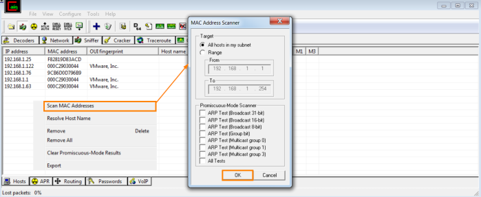
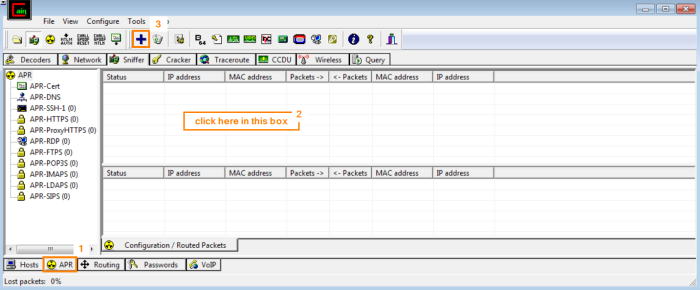
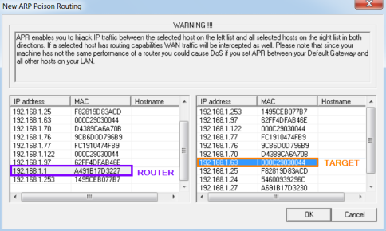
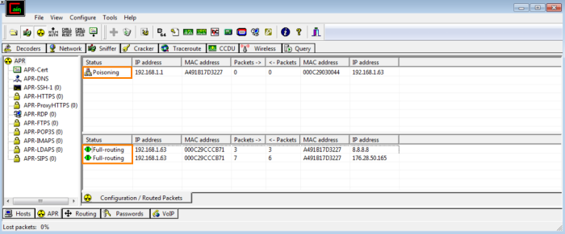

ARP Poisoning
Start to Sniffing
Sniffer tab → Start/Stop sniffer icon
Scan MAC address
After that we have provided the address range to scan, Cain will automatically resolve IP to MAC based on ARP Request/Reply packets
Select targets of the ARP Poisoning attack
APR tab → click in the top white box → Add to list
*if we want to capture traffic from multiple hosts, we can hold down the CTRL key and click the other systems
Start ARP poisoningIf everything is set correctly, we should now see the word
Poisoning in the Status column and we will start seeing packets in the bottom section of the window.
Status of the Poisoning
Broadcasting → the APR received a packet from a host on a different network directed to a host we are not poisoning. In order to ensure that the packet gets back to the host, APR will broadcast the packet to all hosts on the LAN.
Half-Routing → means that APR is only routing traffic on one side of the connection (either client to server, orserver to client), but not both sides.
There are a couple of reasons this can happen:
◇ One of the two hosts cannot be poisoned.
◇ Asymmetric routing is used on the LAN.
In this state, APR is limited in that it cannot grab any authentications that use challenge response mechanisms for proper authentication. More than likely, the Poisoned system is still using the correct destination MAC address, so the traffic is bypassing the attacker system.
Full-Routing → this state means that APR is routing traffic successfully both ways, and all authentication will be captured accordingly.
{kind=link}
{kind=link}
{kind=link}
{kind=link}